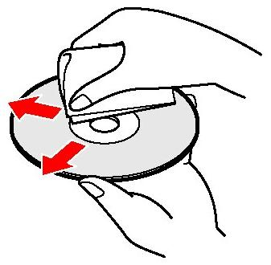

ข้อสำคัญ:
*ถ้าหากใช้แผ่น CD-R หรือ CD-RW , ตรวจเช็คดูรายละเอียดสเปคของเครื่องเล่น CD เพื่อตรวจสอบดูว่ารองรับมีเดียนี้ได้หรือไม่
*โซนี่ ไม่สามารถรับประกันการเล่นได้เมื่อใช้แผ่น CD-R หรือ CD-RW ที่บันทึกโดยเครื่องเขียนแผ่น. ต้องมั่นใจว่าได้ใช้แผ่นดิสก์ที่ผลิตมาจำหน่าย เมื่อทำตามขั้นตอนการแก้ปัญหาด้านล่างนี้
*ถ้าหากต้องใช้ข้อมูลเฉพาะรุ่น ให้อ้างอิงกับคู่มือการใช้งานที่จัดมาให้พร้อมกับเครื่องนั้น.
*ตรวจเช็คดูว่าแผ่นดิสก์นั้นได้มีการใส่เข้าไปอย่างถูกต้องโดยหันด้านที่มีฉลากขึ้นด้านบน
1.ทำความสะอาดแผ่นดิสก์โดยใช้ผ้าแห้งที่อ่อนนุ่ม.
 คำเตือน: มีความเสี่ยงที่ข้อมูลจะเกิดการสูญหายได้. ห้ามใช้สารละลายเช่นเบนซิน ทินเนอร์ น้ำยาทำความสะอาดที่มีจำหน่ายทั่วไป หรือ สเปรย์กำจัดไฟฟ้าสถิตย์ ที่ทำมาสำหรับแผ่นเสียงไวนิล. ผลิตภัณฑ์เหล่านี้สามารถจะสร้างความเสียหายกับแผ่นดิสก์ได้.
ให้จับแผ่นดิสก์ที่ขอบด้านนอกและไม่สัมผัสที่ผิวหน้าของแผ่น , ใส่แผ่นเข้าไปใหม่ และกดที่ปุ่ม PLAY เพื่อดูว่าแผ่นสามารถเล่นได้หรือไม่.
- หมายเหตุ: ให้กดปุ่ม PLAY เพียงครั้งเดียว. ถ้าหากกดปุ่มนี้มากกว่าหนึ่งครั้ง แผ่นอาจจะหยุดเล่นได้. ถ้าหากปุ่มนี้ไม่ทำงาน อาจจะจำเป็นต้องได้รับบริการตรวจซ่อมแล้ว.
- สำหรับเครื่องเล่่นแผ่นดิสก์ ที่่มีสวิทช์ HOLD , ต้องมั่นใจว่าสวิทช์นี้ไม่ได้อยู่ที่ตำแหน่ง OFF .
- พยายามเล่นแผ่นที่ซื้อจากร้านที่แตกต่่างกันสองสามแผ่น.
หมายเหตุ: ถ้าหากปัญหาไม่เกิดขึ้นเมื่อทำการเล่นแผ่นที่ใหม่ที่ใส่เข้าไป แสดงว่าแผ่นก่อนหน้านี้มีความบกพร่อง. ไม่เช่นนั้น, ให้ทำต่อในขั้นตอนการแก้ปัญหาต่อไป.
- ถ้าทำได้ ให้ทำการรีเซ็ตเครื่องเล่น CD .
หมายเหตุ: ถ้าหากเครื่องรุ่นของท่านไม่มีปุ่ม RESET หรือขั้นตอนที่จะทำการรีเซ็ตหน่วยความจำ , ให้ถอดปลั๊กสายไฟกำลัง (และ/หรือ ถอดแบตเตอรี่ใด ๆ ออก) และปล่อยให้เครื่องอยู่อย่างนั้นสองสามนาที จากนั้นให้เชื่อมต่อกำลังไฟกลับไปให้กับตัวเครื่อง.
- ถ้าหากแผ่นดิสก์ยังคงไม่เล่น ซึ่งขึ้นอยู่กับตำแหน่งของเครื่องเล่นซีดีของท่าน, ปัญหาอาจจะเกิดจากการกลั่นตัวของความชื้นได้เช่นกัน. เปิดช่องใส่แผ่นขึ้นมา และปล่อยให้เครื่องไว้อย่างนั้นประมาณหนึ่งชั่วโมง เพื่อให้การกลั่นตัวของความชื้นกระจายตัวออกไป.
- ถ้าหากเครื่องยังไม่เล่นแผ่นดิสก์ใด ๆ ตัวปิคอัปแสงเลเซอร์อาจจะสกปรกก็ได้.
ข้อสำคัญ: ไม่แนะนำให้ใช้ตัวทำความสะอาดเลนส์ของเครื่องเล่น CD/DVD . เลนส์เหล่านี้จะต้องทำความสะอาดโดยช่างเทคนิคที่ผ่านการฝึกฝนมาจากโรงงานเท่านั้น.
|